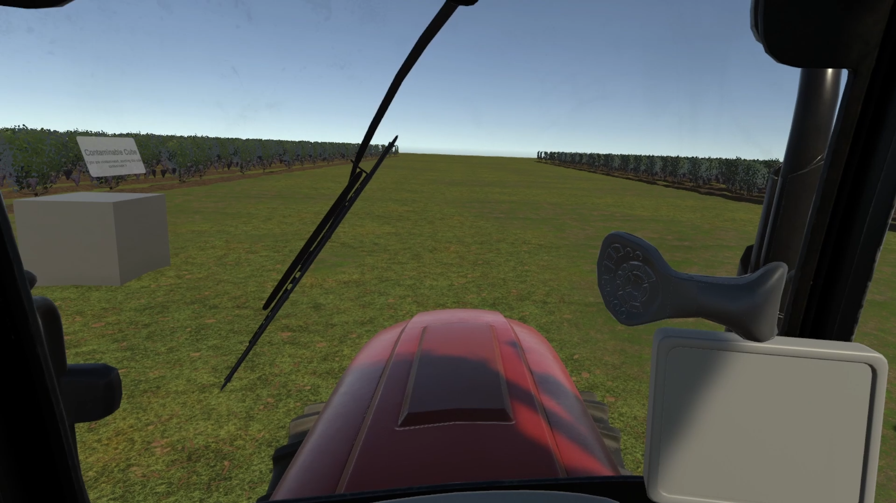
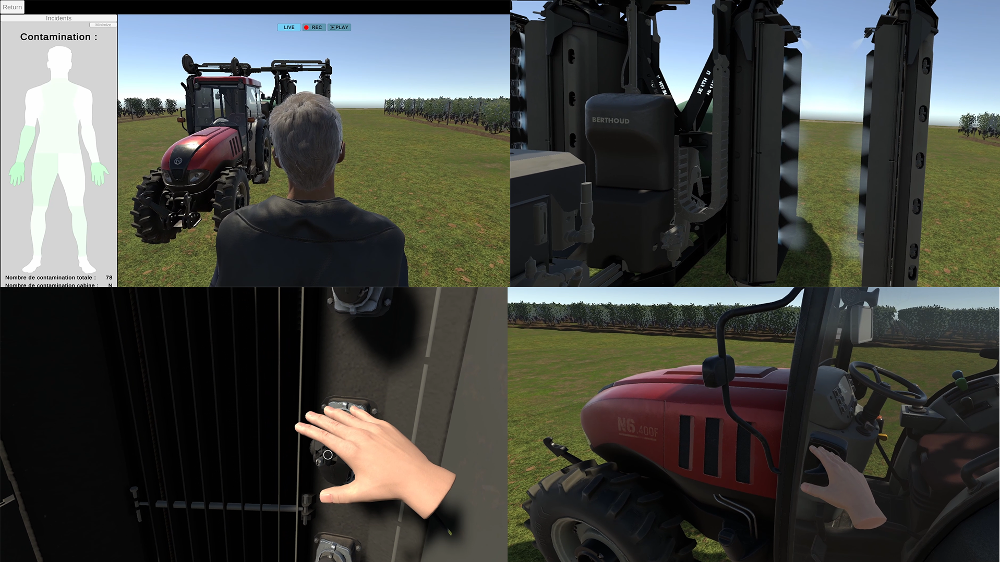
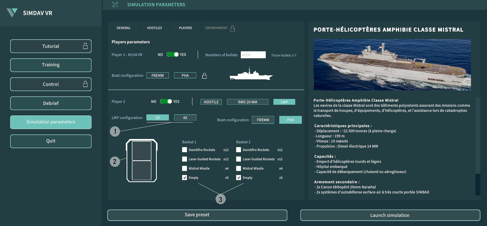
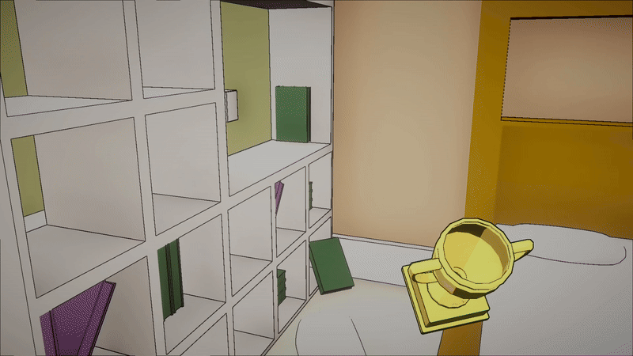
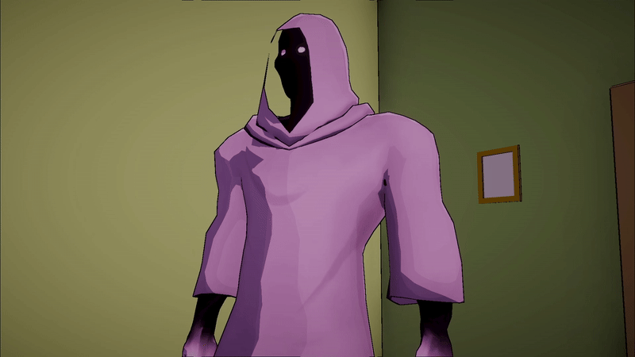

VR Programming / UI Programming

11 month
3 people
Unity, C#
Pulve Ergo is a viticulture simulation project developed during my apprenticeship at Studio Nyx. The goal of the project is to raise awareness among pesticide sprayer manufacturers about user contamination risks. The simulation recreates a typical workday of a vineyard worker, and at the end, it tracks the number of contacts with surfaces contaminated by toxic substances. The project was not fully completed during my time at Studio Nyx.
- VR Gameplay Programmer
- UI Programmer
In addition to integrating VR object interaction systems, the main challenge was implementing a scene recording system to analyze the simulation once it was completed.
How can we record a Unity scene in order to replay it from multiple camera angles ?
👉 Solution : I implemented a system that captures object transforms (position, rotation, etc.) every frame. During replay, the system reconstructs the scene by interpolating the recorded data. By placing multiple cameras in the scene, it becomes possible to review the simulation from different angles during playback.

Comment programmer l'Ui pour paramètrer la simulation (nombre et type d'entités ennemis, type d'armement, etc...)?
👉 Solution : Intégrer un systeme de capture de transform d'objets (Position,rotation, etc...) à chaque frame. Pour le replay le systême rejoue par interpolation les datas capturés pour reconstruire l'action de la scène.


